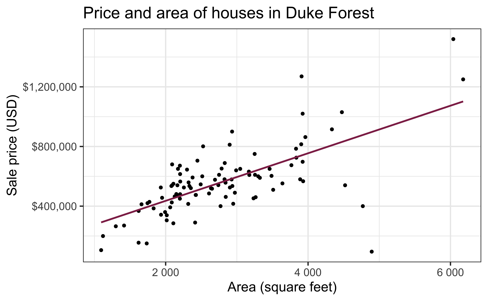

# load packages
library(tidyverse) # for data wrangling and visualization
library(tidymodels) # for modeling
library(openintro) # for Duke Forest dataset
library(scales) # for pretty axis labels
library(glue) # for constructing character strings
library(knitr) # for neatly formatted tables
library(kableExtra) # also for neatly formatted tablesf
# set default theme and larger font size for ggplot2
ggplot2::theme_set(ggplot2::theme_bw(base_size = 16))SLR: Simulation-based inference
Bootstrap confidence intervals for the slope
Tulane Health Policy Case Competition
“The Tulane Health Policy Case Competition gives teams of undergraduate students an opportunity to apply their talents and knowledge to put together a solution to a given health policy program Teams of up to three undergraduate students create policy-based solutions to a given problem. A workshop will be provided shortly after the case is released. Teams will construct PowerPoint presentations on solutions to the problem. Finalists will present to a panel of judges for real-time feedback.”
Deadline to register: September 30.
See website for more info: https://sph.tulane.edu/tuhpcc
Statistics experience assignment
Goal: Engage with statistics / data science outside the classroom and connect your experience with what you’re learning in the course.
What: Have a statistics experience + create a slide reflecting on the experience. Counts as a homework grade.
When: Must do the activity this semester. Reflection due Monday, November 20 at 11:59pm
For more info: sta210-fa23.netlify.app/stats-experience
Statistician of the day
AE 03
Simulation-based inference
Bootstrap confidence intervals
Topics
- Find range of plausible values for the slope using bootstrap confidence intervals
Computational setup
Data: Houses in Duke Forest
- Data on houses that were sold in the Duke Forest neighborhood of Durham, NC around November 2020
- Scraped from Zillow
- Source:
openintro::duke_forest

Goal: Use the area (in square feet) to understand variability in the price of houses in Duke Forest.
Exploratory data analysis
Code
ggplot(duke_forest, aes(x = area, y = price)) +
geom_point(alpha = 0.7) +
labs(
x = "Area (square feet)",
y = "Sale price (USD)",
title = "Price and area of houses in Duke Forest"
) +
scale_y_continuous(labels = label_dollar()) 
Modeling
df_fit <- linear_reg() |>
#set_engine("lm") |>
fit(price ~ area, data = duke_forest)
tidy(df_fit) |>
kable(digits = 2) #neatly format table to 2 digits| term | estimate | std.error | statistic | p.value |
|---|---|---|---|---|
| (Intercept) | 116652.33 | 53302.46 | 2.19 | 0.03 |
| area | 159.48 | 18.17 | 8.78 | 0.00 |
. . .
- Intercept: Duke Forest houses that are 0 square feet are expected to sell, for $116,652, on average.
- Is this interpretation useful?
- Slope: For each additional square foot, we expect the sale price of Duke Forest houses to be higher by $159, on average.
From sample to population
For each additional square foot, we expect the sale price of Duke Forest houses to be higher by $159, on average.
- This estimate is valid for the single sample of 98 houses.
- But what if we’re not interested quantifying the relationship between the size and price of a house in this single sample?
- What if we want to say something about the relationship between these variables for all houses in Duke Forest?
Statistical inference
Statistical inference provide methods and tools so we can use the single observed sample to make valid statements (inferences) about the population it comes from
For our inferences to be valid, the sample should be random and representative of the population we’re interested in
Inference for simple linear regression
Calculate a confidence interval for the slope, \(\beta_1\)
Conduct a hypothesis test for the slope,\(\beta_1\)
Confidence interval for the slope
Confidence interval
- A plausible range of values for a population parameter is called a confidence interval
- Using only a single point estimate is like fishing in a murky lake with a spear, and using a confidence interval is like fishing with a net
- We can throw a spear where we saw a fish but we will probably miss, if we toss a net in that area, we have a good chance of catching the fish
- Similarly, if we report a point estimate, we probably will not hit the exact population parameter, but if we report a range of plausible values we have a good shot at capturing the parameter
Confidence interval for the slope
A confidence interval will allow us to make a statement like “For each additional square foot, the model predicts the sale price of Duke Forest houses to be higher, on average, by $159, plus or minus X dollars.”
. . .
Should X be $10? $100? $1000?
If we were to take another sample of 98 would we expect the slope calculated based on that sample to be exactly $159? Off by $10? $100? $1000?
The answer depends on how variable (from one sample to another sample) the sample statistic (the slope) is
We need a way to quantify the variability of the sample statistic
Quantify the variability of the slope
for estimation
- Two approaches:
- Via simulation (what we’ll do today)
- Via mathematical models (what we’ll do in the next class)
- Bootstrapping to quantify the variability of the slope for the purpose of estimation:
- Bootstrap new samples from the original sample
- Fit models to each of the samples and estimate the slope
- Use features of the distribution of the bootstrapped slopes to construct a confidence interval
Bootstrap sample 1
`geom_smooth()` using formula = 'y ~ x'
`geom_smooth()` using formula = 'y ~ x'
Bootstrap sample 2
`geom_smooth()` using formula = 'y ~ x'
`geom_smooth()` using formula = 'y ~ x'
Bootstrap sample 3
`geom_smooth()` using formula = 'y ~ x'
`geom_smooth()` using formula = 'y ~ x'
Bootstrap sample 4
`geom_smooth()` using formula = 'y ~ x'
`geom_smooth()` using formula = 'y ~ x'
Bootstrap sample 5
`geom_smooth()` using formula = 'y ~ x'
`geom_smooth()` using formula = 'y ~ x'
. . .
so on and so forth…
Bootstrap samples 1 - 5
`geom_smooth()` using formula = 'y ~ x'
`geom_smooth()` using formula = 'y ~ x'
Bootstrap samples 1 - 100
`geom_smooth()` using formula = 'y ~ x'
`geom_smooth()` using formula = 'y ~ x'
Slopes of bootstrap samples
Fill in the blank: For each additional square foot, the model predicts the sale price of Duke Forest houses to be higher, on average, by $159, plus or minus ___ dollars.
`geom_smooth()` using formula = 'y ~ x'
Slopes of bootstrap samples
Fill in the blank: For each additional square foot, we expect the sale price of Duke Forest houses to be higher, on average, by $159, plus or minus ___ dollars.
Warning: Using `size` aesthetic for lines was deprecated in ggplot2 3.4.0.
ℹ Please use `linewidth` instead.
Confidence level
How confident are you that the true slope is between $0 and $250? How about $150 and $170? How about $90 and $210?

95% confidence interval

- A 95% confidence interval is bounded by the middle 95% of the bootstrap distribution
- We are 95% confident that for each additional square foot, the model predicts the sale price of Duke Forest houses to be higher, on average, by $90.43 to $205.77.
Application exercise
Computing the CI for the slope I
Calculate the observed slope:
observed_fit <- duke_forest |>
specify(price ~ area) |>
fit()
observed_fit# A tibble: 2 × 2
term estimate
<chr> <dbl>
1 intercept 116652.
2 area 159.Computing the CI for the slope II
Take 100 bootstrap samples and fit models to each one:
set.seed(1120)
boot_fits <- duke_forest |>
specify(price ~ area) |>
generate(reps = 100, type = "bootstrap") |>
fit()
boot_fits# A tibble: 200 × 3
# Groups: replicate [100]
replicate term estimate
<int> <chr> <dbl>
1 1 intercept 47819.
2 1 area 191.
3 2 intercept 144645.
4 2 area 134.
5 3 intercept 114008.
6 3 area 161.
7 4 intercept 100639.
8 4 area 166.
9 5 intercept 215264.
10 5 area 125.
# ℹ 190 more rowsComputing the CI for the slope III
Percentile method: Compute the 95% CI as the middle 95% of the bootstrap distribution:
Precision vs. accuracy
If we want to be very certain that we capture the population parameter, should we use a wider or a narrower interval? What drawbacks are associated with using a wider interval?
. . .

Precision vs. accuracy
How can we get best of both worlds – high precision and high accuracy?
Changing confidence level
How would you modify the following code to calculate a 90% confidence interval? How would you modify it for a 99% confidence interval?
Changing confidence level
## confidence level: 90%
get_confidence_interval(
boot_fits, point_estimate = observed_fit,
level = 0.90, type = "percentile"
)# A tibble: 2 × 3
term lower_ci upper_ci
<chr> <dbl> <dbl>
1 area 104. 212.
2 intercept -24380. 256730.## confidence level: 99%
get_confidence_interval(
boot_fits, point_estimate = observed_fit,
level = 0.99, type = "percentile"
)# A tibble: 2 × 3
term lower_ci upper_ci
<chr> <dbl> <dbl>
1 area 56.3 226.
2 intercept -61950. 370395.Recap
Population: Complete set of observations of whatever we are studying, e.g., people, tweets, photographs, etc. (population size = \(N\))
Sample: Subset of the population, ideally random and representative (sample size = \(n\))
Sample statistic \(\ne\) population parameter, but if the sample is good, it can be a good estimate
Statistical inference: Discipline that concerns itself with the development of procedures, methods, and theorems that allow us to extract meaning and information from data that has been generated by stochastic (random) process
We report the estimate with a confidence interval, and the width of this interval depends on the variability of sample statistics from different samples from the population
Since we can’t continue sampling from the population, we bootstrap from the one sample we have to estimate sampling variability